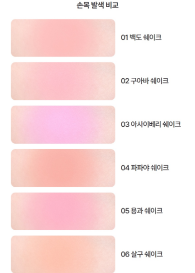
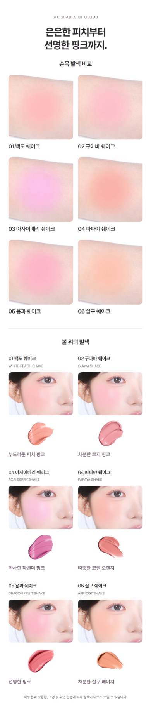

이전 안 · 사용자 거절로 대체되었습니다. 최신 단일 발색표 확인
여섯 색은 함께 비교하고,
볼 발색은 이어서 확인하도록.
선택: 2열 × 3행 손목 비교
좁은 가로 띠보다 손목과 발색의 부드러운 가장자리를 넓게 보여주는 안을 선택했습니다. 색상명을 키우고, 전체 비교를 개별 볼·제형 카드 앞으로 옮겼습니다.
제형 설명 → 손목 6색 비교 → 볼·제형 상세
같은 원본으로 두 배치를 비교했습니다.
아래 이미지는 430px 기준으로 출력한 실제 JPG를 모바일 390px로 표시한 결과입니다. 선택안과 제외안을 같은 조건으로 확인했습니다.
손목과 색이 퍼지는 경계를 함께 확인
원본 사진 높이의 약 80%를 표시합니다. 손목 비교 블록은 390px 화면에서 약 659px 높이입니다.
짧아지지만 발색 위아래가 크게 잘림

원본 사진 높이의 약 29%를 표시합니다. 높이는 약 548px로 줄지만 피부와 발색 경계의 맥락이 약해집니다.
80%·29%는 사진의 세로 영역 비율이며, 발색의 강도나 안료량 수치가 아닙니다. 서로 다른 원본 촬영의 피부 톤·조명 차이는 남아 있습니다.
레퍼런스에서 확인한 것과 이번 판단을 구분했습니다.
| 근거 | 확인한 내용 | 이번 적용 |
|---|---|---|
| 프레시안 | 개별 볼·제형 비교와 별도의 컬러 모음. 모음은 상세 후반에 위치. | 전체 비교와 개별 피부 표현을 둘 다 제공하되, 손목 2열 배치와 앞쪽 순서는 TAM 원본에 맞춰 판단. |
| 네이밍 | 컬러·톤별 볼과 제형을 연결하고 별도의 톤 개요 제공. | |
| TAM 원본·모바일 비교 | 둥근 발색이 가로 띠에서 잘림. 2열은 경계를 더 넓게 보존하고 기존 카드 구성과 연결됨. | 2열 × 3행 선택. 비교 구간을 앞에 배치하고 새 손목 라벨의 320px 환산 글자 크기를 12.1px로 확보. |
타 브랜드 관찰은 10월 16일 수집한 상세 이미지 기준입니다. 특정 배치의 판매 효과나 최적 전환율을 검증한 자료는 아닙니다.
반영된 색상 구간
원본 손목·볼·제형 사진은 각각 한 번씩 사용했습니다. 안내 문장 한 줄을 덜고, 두 종류의 사진이 맡는 역할을 소제목으로 구분했습니다.

발색 구간 전체 길이는 기존과 거의 같습니다. 이 수정은 사진 크기를 희생하는 축약보다 비교 순서와 가독성을 개선하는 데 집중했습니다.
최종 확인
클로드 독립 검토도 A안과 비교 우선 순서를 권했습니다. 320·390px 비교 시안에서 필수 수정 지적은 없었습니다. 반영 후 실제 등록 파일을 320·390·860px에서 다시 확인했고, 이미지 표시·가로 넘침·파일 연결·ZIP 검사를 통과했습니다.
히어로와 제형 GIF, 전체 제품정보·전성분은 그대로 유지했습니다. 실제 카페24 업로드는 요청대로 진행하지 않았습니다.
클로드 의견과 최종 판단 구분
클로드가 사용한 ‘블러 마무리의 증거’, ‘변환이 끝난 결과’라는 해석은 채택하지 않았습니다. 별도 촬영한 손목 사진으로 제형 변화나 효능을 입증할 수는 없습니다. 사진 배치와 읽기 순서에 대한 의견만 반영했습니다.
검토 이미지에는 JPG 압축이 이미 반영돼 있습니다. 실제 카페24 관리자 저장과 실기기 확인은 향후 적용 단계입니다. 클로드는 색상 구간을 검토했고, 전체 페이지 흐름은 Codex가 별도로 확인했습니다.
**결론: A(정사각 2×3)를 추천하고, 손목 비교를 볼 카드 앞으로 옮기는 것도 권장합니다. 320/390에서 반드시 고쳐야 할 항목은 없습니다.** | | A | B | |---|---|---| | 원본 사진 높이 노출 | 80% | 29% | | 손목 블록 높이, 430 기준 | 726px | 604px | | 라벨 크기, 320 환산 | 12.1px | 12.1px | **1) A 추천 이유와 단점** - **A는 증거가 살아 있음.** 손목 피부, 둥근 발색 덩어리, 가장자리가 번져 사라지는 경계가 다 보입니다. 이 경계가 곧 블러 마무리의 증거라서 직전 크림→파우더 영상과 이어집니다. - **B는 사진이 아니라 색 띠로 읽힘.** 높이 29%만 남기니 덩어리 위아래가 잘려 손목이라는 맥락이 사라집니다. 01·02·06은 거의 균일한 색 밴드로 보여 실제보다 커버력이 높아 보이고, 보정이나 생성 스와치로 오해받을 여지가 생깁니다. 보정을 안 했어도 보는 사람은 구별할 수 없습니다. 프레시안 톤 섹션의 제형 스트립과 형식이 겹쳐 피부 증거가 아니라 제형 칩처럼 보이는 점도 같은 문제입니다. - **B의 장점은 작음.** 한 열 세로 비교와 라벨 나란히 배치, 높이 약 122px 절감이 전부입니다. A도 390에서 여섯 장이 한 화면에 거의 들어오므로 비교 편의 차이는 크지 않습니다. - **A의 단점.** 두 열이라 01과 06 같은 대각선 비교는 시선이 두 번 움직입니다. 사진이 많이 보이는 만큼 원본 차이도 드러납니다. 01·05 왼쪽 아래 팔 가장자리, 02 왼쪽 위 밝은 부분, 04 손목이 더 어둡고 붉은 점이 눈에 띕니다. 보정 금지라 받아들여야 하는 부분입니다. **2) 순서: 손목 비교를 먼저** - 헤드라인 "은은한 피치부터 선명한 핑크까지"는 범위 주장입니다. 그 범위를 한눈에 증명하는 블록은 손목 그리드뿐입니다. 볼 카드는 여섯 장을 다 보려면 약 1,200px을 내려야 하고, 볼 사진에서는 01·02·06 차이가 미세합니다. 주장 바로 아래 증거, 그다음 상세가 자연스러운 위계입니다. - 직전 영상이 한 색의 변환이라면 손목 그리드는 변환이 끝난 여섯 색의 결과, 볼 카드는 적용 장면입니다. 영상 → 결과 → 적용 순서가 이어집니다. - 기존 안의 "볼 위의 컬러와 손목 발색을 비교해 보세요"는 손목이 1,200px 아래라 문구가 약속한 비교가 실제로 안 됐습니다. A안은 문구를 빼고 구조로 해결했습니다. - 경쟁사 두 곳은 상세 → 개요 순이 맞습니다. 다만 둘은 12~20색을 톤별로 묶어 상세 자체가 개요 역할을 합니다. 우리는 6색이고 톤 묶음이 없어 범위를 보여주는 건 손목 그리드뿐입니다. 따라 하거나 거스르는 게 아니라 조건이 다릅니다. - **옮길 때의 비용.** 섹션 첫 줄이 가장 옅은 01·02라 얼굴로 시작하던 기존보다 첫인상이 약합니다. 390에서는 첫 화면에 두 줄이 들어와 03·04까지 보이므로 감수할 만합니다. 또 면책 한 줄이 섹션 끝에 남아 손목 그리드와 약 1,800px 떨어집니다. 손목 사진은 별개 촬영이라 이 문구가 가장 필요한 곳은 그리드 바로 아래입니다. 중복 없이 그 한 줄만 옮기는 것을 권장합니다. 필수는 아닙니다. **3) 320/390 필수 수정** 없음. 참고 두 가지만 남깁니다. - A 라벨은 320 환산 12.06px로 목표 하한에 딱 걸립니다. 2x 기기에서는 문제없고 1x 화면은 확인하지 못했습니다. - B를 쓸 경우 "03 아사이베리 쉐이크" 라벨이 320에서 오른쪽 여백 약 20px로 빡빡합니다. 래스터 이미지라 줄바꿈 위험은 없습니다. **4) 증거 한계** - 스크린샷 육안 검토입니다. 소비자 테스트나 전환 데이터는 없습니다. - 80%·29%는 사진 높이 비율이며 안료나 발색 정도의 측정치가 아닙니다. - 손목 사진 6장은 별개 촬영입니다. 피부톤·노출·손목 각도가 다르므로 동일 조건 비교로 말하면 안 됩니다. - 경쟁사 캡처로는 구조만 확인했고 성과 근거는 없습니다. - 320/390은 430@2x를 축소한 결과입니다. 실제 카페24 기기 렌더링과 JPEG 압축은 미검증입니다. - 직전 영상 섹션과 페이지 전체 흐름은 보지 못했습니다. 이 섹션만 본 판단입니다.